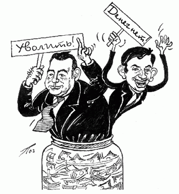

Все знают, что в гражданской авиации давно создалась критическая ситуация. Устаревшая техника, тяжелые условия труда, низкая зарплата привели к тому, что опытные специалисты увольняются, а молодые не приходят. Как в таких условиях соблюдать безопасность полетов, что ждет гражданскую авиацию через несколько лет? Об этом шел серьезный разговор на состоявшемся в конце ноября минувшего года заседании Совета Федерации профсоюзов авиадиспетчеров России и Профсоюза авиаработников радиолокации, радионавигации и связи, где было решено провести 30 ноября забастовку, чтобы привлечь внимание правительства к данным проблемам. Участвовать в акции согласились 40 из 120 центров управления воздушным движением (УВД).
|
Генпрокуратура сразу заявила, что акция противозаконна и нарушает нормы действующего законодательства, потребовала от прокуроров 13 субъектов Федерации, где намечалась акция, «принять незамедлительные меры прокурорского реагирования к предотвращению незаконной забастовки авиадиспетчеров». |
Но, несмотря на угрозы, акция началась. Причем из-за запрета на забастовку в отрасли, она стала превращаться в расширенную голодовку, которую невозможно запретить. Первыми выступили авиадиспетчеры Сургута, где положение особенно тяжелое. Два года коллектив требует от своего руководства повышения зарплаты, сохранения социальных льгот, улучшения условий труда. Ведутся бесконечные переговоры с окружным, московским руководством, создаются бесчисленные комиссии, но толку никакого. Когда диспетчеры решили собраться в одном из помещений предприятия, чтобы обсудить начало акции протеста, директор Накипов продержал их на 40-градусном морозе: там обсуждайте! А вышестоящему начальству доложил: ситуация находится под контролем.
Не придали сначала ни в Сургуте, ни в Москве серьезного значения этой акции. Тем более, что окружной прокурор пригрозил возбудить уголовное дело против зачинщиков. Но люди не испугались угроз, не поддались на шантаж. Восемь дней они держали голодовку, а те, кого медики не отстранили, продолжали выполнять свои служебные обязанности. Каждый день лидер их профсоюза П. Бубнов передавал сообщения в ФПАД России, каждое — свидетельство мужества, стойкости.
«Третий день голодовки. К голодающим авиадиспетчерам присоединились работники радиолокации и радионавигации. Продолжается давление со стороны руководства и прокуратуры. Угрожают возбудить уголовное дело. Еще двое работников были отстранены от работы после предсменного медосмотра, хотя администрация требовала отменить это решение». |
|
По настоянию администрации медики перестали измерять заступающим на смену авиадиспетчерам температуру и давление. Врачам было «рекомендовано» записывать отстраняемым диагноз — недостаток предсменного отдыха. «Начали вводить сокращения на полеты в зоне Сургутского УВД. В районе аэродрома управление обеспечивается голодающими авиадиспетчерами, один из которых с высокой температурой был допущен после медосмотра к работе. В 15 часов приехала «скорая», из 15 осмотренных троих госпитализировали, еще трое в критическом состоянии, но от госпитализации отказались».
«Начался шестой день голодовки. Пока все живы. Мы по-прежнему находимся в здании аэровокзала. Только со вчерашнего дня медики стали официально признавать факт голодовки, что отмечают в справках. По состоянию здоровья освобождены от работы 21 человек. На дежурство с утра должна заступать смена №5, но все авиадиспетчеры, включая руководителей полетами, отстранены от работы медиками. Работают только двое из учебно-тренировочного центра».
На восьмой день голодовки обессиленные и истощенные люди собрались, чтобы принять срочное обращение к коллегам по профессии, к правительству с призывом срочно переломить ситуацию в гражданской авиации.
«Если наша акция протеста не увенчается успехом, — говорится в обращении, — это конец для всех авиадиспетчеров. Будем работать под статусом раба до конца своих дней, пополняя и без того толстые кошельки наших баев. Мы останемся для них быдлом, как сейчас. Времени очень мало. Только вместе мы сможем чего-то добиться. Этот акт протеста — самое большое, что нам позволено в России».
По призыву и под руководством своих профсоюзов всего за несколько дней в акцию включились работники 43 центров по организации воздушного движения, в том числе таких крупных городов, как Омск, Новосибирск, Томск, Иркутск, Челябинск, Архангельск, Самара, Пермь, Барнаул, Мурманск, Казань, Нальчик. Поддерживая требования сургутских коллег, забастовщики выдвигали свои. И всюду встречали упорное сопротивление администрации и угрозы, местных властей. В Ростове-на-Дону омоновцы выгнали голодающих из здания аэровокзала, где они проводили время после смены. Так же расправились с ними в Омске, а директор авиапредприятия сказал: «Пусть голодают, сейчас ведь пост». В Калининграде, где акция нашла форму постоянного профсоюзного собрания, людей тоже выставили на улицу. Калининградский профсоюз заявил, что если кто-нибудь из участников акции будет уволен, она будет продолжена до восстановления уволенных на работе. Сургутские авиадиспетчеры в ответ на угрозу увольнения зачинщиков написали заявления на расчет, чтобы выложить их на стол, если начнутся репрессии.
Но правительство все еще не видело никакой опасности, продолжая хранить безмятежное спокойствие.
 |
— Правительство не готово удовлетворить требования авиадиспетчеров о повышении зарплаты, — заявил министр труда и социального развития А. Починок. В службе гражданской авиации, умышленно смещая понятия, чиновники призвали власти к расправе над «смутьянами», осмелившимися выступить против установленных порядков. Но заколебались и эти, казалось, незыблемые столпы. Положение становилось угрожающим. Акция протеста привела к тому, что Россия практически закрыла свои северные трассы. Около 200 внутренних и международных рейсов пришлось перевести на южные центры управления полетами, где нагрузка на диспетчеров возросла вдвое. Но и они должны были начать голодовку с 6 декабря. В такой безвыходной ситуации правительству, Госкорпорации по организации воздушного движения ничего не оставалось, как пойти на переговоры. А голодовки временно были прекращены. |
В результате переговоров между руководством ФПАД России, Минтранса и Госкорпорации по ОВД был согласован план мероприятий для выполнения требований. Но уже 20 декабря на Конференции ФПАД России было принято постановление, где говорится, что, в связи с отказом Министерства транспорта выполнить требования об увеличении заработной платы и сохранении социальных льгот и гарантий, с 22 декабря возобновляются акции протеста. Уже после принятия постановления на конференции появились представители Минтранса РФ, которые согласились частично выполнить требования. Но лидеры профсоюза оставили их без изменения.
В назначенный день снова возобновили голодовку работники десятков центров по организации воздушного движения. И только после этого переговоры возобновились.
— Зарплату авиадиспетчерам можно повысить только за счет сокращения числа рейсов и диспетчеров там, где небольшая интенсивность движения, — утверждала одна сторона.
— Это совершенно неверный подход, — доказывала другая. — Намного эффективнее будет провести реформу в структуре управления Госкорпорации по ОВД. Давно назрела необходимость пересмотреть ее штатное расписание. А вот другой ресурс. Почему с японцев берут только 30% от общемирового тарифа при полетах над Россией? Западные авиакомпании отдают нам за каждые 100 км пути 80 долларов, тогда как диспетчерам Европы — 120 долларов.
Немало других резервов было названо в ходе переговоров. Будут ли они задействованы — покажет время. А пока лидеры Федерации профсоюзов авиационных диспетчеров России и Профсоюза авиационных работников радиолокации, радионавигации и связей договорились с руководством Госслужбы гражданской авиации и Госкорпорации по организации воздушного движения о повышении заработной платы работникам с 1 января 2003 года. Зарплата авиадиспетчерам увеличится на 28%. Деньги для этого нашлись, особенно после того, как некоторые счета были переведены из Швейцарии в Россию.
Одержана крупная победа рабочего движения над капиталом и его правительством. Она стала возможной благодаря единым, слаженным действиям руководства профсоюзов и трудящихся. Пример героической борьбы авиадиспетчеров, несомненно, придаст новые силы всему рабочему движению. Защищаясь, режим готов пойти на любые меры, в чем мы уже не раз могли убедиться. Вот и теперь прокуроры Новосибирска и Омска обратились в местные суды с требованием признать голодовку противозаконным актом, а стало быть — запретить ее. Вот уж насмешили господа прокуроры. Трудно поверить, но факт есть факт. Федеральный суд г. Оби Новосибирской области, где находится аэропорт «Толмачево», удовлетворил иск прокурора области, объявив акцию протеста авиадиспетчеров в виде голодовки незаконной. Может, суд заставит авиадиспетчеров насильно есть?
Одновременно с российскими авиадиспетчерами бастовали их французские и немецкие коллеги, но там никого не преследовали в судебном порядке. Что же тут не берут пример с Европы? Почему молчат, как в рот воды набрали, наши правозащитнички? Или у них хватает смелости только на защиту прав уголовников и гомосексуалистов?
Авиадиспетчеры России не сдаются. ФПАД намерен оспорить в Верховном суде решение суда города Оби. Если понадобится — то и в Международном европейском суде. Народ поддерживает авиадиспетчеров. Хорошо сказано об этом в письме Профсоюза авиадиспетчеров Дагестана коллегам из Сургута: «Спасибо авиадиспетчерам из Сургута за урок самоотверженности, смелости в отстаивании своих и наших прав! Уже в течение нескольких лет дирекция Госкорпорации гражданской авиации планомерно и целенаправленно пытается то лишить нас питания и льготных билетов, то уменьшить отпуска и т.д. Оправдание — нет денег. Зато в штатах правления — секретари, шикарные офисы, автомобили, появляются сотовые телефоны, компьютеры. Мы понимаем, что все это надо, но не за наш счет! Приходится работать в ущерб здоровью и нашему благополучию. Мы так жить не хотим и не будем!»
Г. ТИТАРЧУК
|
|
|